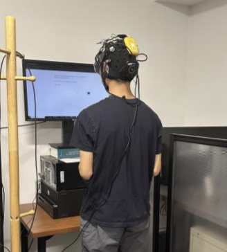

Workload during movement

Brain-Computer Interfaces (BCI) have traditionally focused on detecting users’ unconscious brain states in stationary positions. However, extending BCI applications to mobile scenarios involves evaluating our ability to classify mental workload during movement. Previous research has demonstrated that walking while performing complex cognitive tasks increases mental workload in the prefrontal cortex (Hoang et al., 2020). This study investigates differences in mental workload between standing and walking conditions using multiple sensor modalities designed to assess cognitive load.
We also presented this project at Neuroergonomics 2026 in Boston!